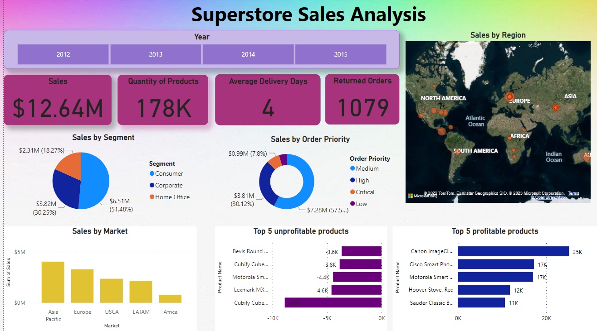

Superstore Sales Analisys using PowerBI
In this project, I used PowerBI to perform analysis on superstore sales data. The data for this dashboard was imported from superstore sales worksheet provided by PowerBI. It contains approximately 24 columns and a few lookup tables for returns and managers. Additional columns were added within Power Bi query editor to complete the data set.
Data Cleaning and Transformation
After importing the dataset, I used powerBI qurey editor to add addtional columns in the data. Some of the changes to transform the data are as below
1. The column "Sales" in the data contained the total amount of Sales but it did not mention the currency. To make the analysis easier I changed the values in the column to dollars.
2. Next, I created a new column "Year" in the dataset and used the powerBI query editor to extract year in which the sales took place. The year ranged from 2012 to 2015. This helped me to understand the year wise sales for better analysis.
3. Another column I created was "Delivery Days", which included the count of days in which the order was delivered.
Dashboard.
The below image is the screenshot of the Dashboard that I created for analysis
Insights
1. The total Sales from year 2012 - 2015 was $12.64M. The Sales increaed every year positively and the highest Sales was made in 2015 with 61K products
2. 50% of the Sales were done by Consumers, 30% by the Corporate and least sales were by the Home Office
3. Out of all the Sales, 30% of the Sales were with High Priority orders
4. The Asia Pacific Market was the biggest consumer followed by Europe. Whereas, the Sales were comparitively less in Africa Market.
5. Smart Phones were the profitable products in all the years followed by Electric binding machines
6. Furnitures were not very popular, and could not generate profit over the years.s